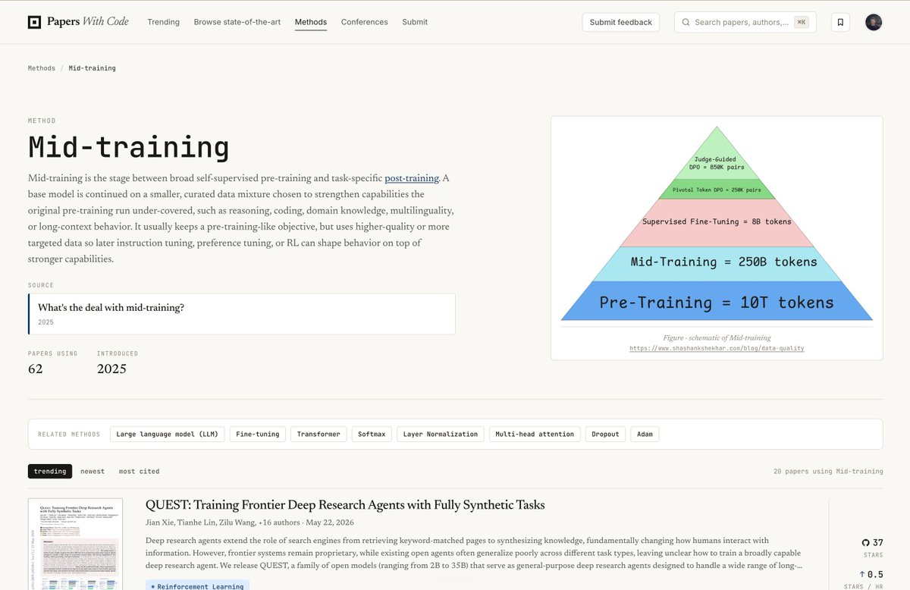

核心判断
这条帖子的价值不在于“mid-training”这个名字，而在于它把训练流水线里长期混在一起的两件事拆开了：能力增强和行为对齐。预训练让模型拥有宽泛的语言和世界统计，后训练让模型学会以人类偏好的方式回答；mid-training 则把通用 base model 继续压向某个高价值能力分布，例如长上下文、代码、数学、多语言、领域知识或 agent 轨迹。
Niels Rogge 给出的定义足够干净：mid-training 位于 pre-training 与 post-training 之间，通常继续使用接近预训练的目标，但数据混合更小、更高质量、更有目标性。这里最关键的是“通常保留 pre-training-like objective”。这使它和 SFT、DPO、RLHF、RLVR 这类直接塑造回答行为的后训练阶段拉开了边界。

我的结论：判断一个训练阶段是否有 mid-training 的实质，不应该只看它是否发生在 pre-training 之后，而要看它是否在用较大规模、高目标性数据改变模型的能力先验。若只是 prompt-response 模仿或 preference pair 对齐，那更接近 post-training；若是在大规模目标分布上继续语言建模，让参数吸收任务结构，那才是这里讨论的 mid-training。